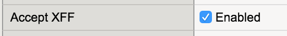

Agility 2018 Self-Guided Lab: Introduction to ASM/AWAF Behavioral DoS
Participant Hands-on Lab Guide

Last Updated: 5/4/2018
©2015 F5 Networks, Inc. All rights reserved. F5, F5 Networks, and the F5 logo are trademarks of F5 Networks, Inc. in the U.S. and in certain other countries. Other F5 trademarks are identified at f5.com.
Any other products, services, or company names referenced herein may be trademarks of their respective owners with no endorsement or affiliation, express or implied, claimed by F5.
Table of Contents
Accessing the lab environment 4
Exercise 1 – DDos Mitigation Using Behavior Analysis 6
Mitigating L7 DDoS Attacks Using Behavioral Analysis 6
Create a DoS Logging profile 8
Add the DoS profile to a virtual server 9
Initiate the Good Traffic script 11
Exercise 2 - Mitigating BoT Attacks 14
Mitigating Bots using a DOS profile 14
Creating/Modifying a DoS Profile 15

Accessing the lab environment¶
- Open a browser and go to `http://training.f5agililty.com/<lab
number>/X <http://training.f5agililty.com/%3clab%20number%3e/X>`__ (where X is your student number)
- Look for the xubuntu-jumpbox-vxx. You will use the xubuntu
jumpbox for all the labs. (see below)

You can click on RDP to RDP to the Xubuntu jumpbox or you can select the CONSOLE link and access the jumpbox via your browser. The CONSOLE link requires you turn off pop-up blockers.

- Open the Chrome browser and log into the BIG-IP GUI to verify the
BIG-IP is up.
- Go to https://10.1.1.245
- User: admin
- Password: admin
- Go to https://10.1.1.245
- Now you will perform an initial configuration via command line.
- Open a terminal window from the taskbar at the bottom.
- Log in to the BIG-IP using the command: ssh root@10.1.1.245
- The password is default.
- At the BIG-IP prompt, enter tmsh
- This will place you in the BIG-IP command line mode.
- In your browser, open then the Lab Guides link on the bookmarks bar in a new tab/window.
- Open the AdvWAF Base Setup.txt file and review the commands.
- Copy all the commands between # BEGIN COPY - Lab prep and # END COPY - Lab prep
- Paste the commands into the terminal window at the tmsh prompt.
- The BIG-IP will take several minutes to come back online.
- Good time for a bathroom break. Smoke ‘em if you got ‘em.
- Open a terminal window from the taskbar at the bottom.
- Verify the virtual server and web site are up and running.
- Go to Local Traffic >> Network Map. There should be two virtual servers and all should be available (green).
- Open up the Firefox browser. Go to http://hackazon.f5demo.com and https://hackazon.f5demo.com
Exercise 1 – DDos Mitigation Using Behavior Analysis¶
Mitigating L7 DDoS Attacks Using Behavioral Analysis¶
Objectives:
- Set up BaDos Profile
- Run good traffic script for BaDoS Learning
- Run DoS Attack
- Observe BIG-IP create Dynamic Signatures and migitate DoS attack
- Estimated time for completion: xx minutes
Set up the DoS profile¶
In the section you will create a DoS profile with behavioral analysis configure and attach the DoS profile to the virtual server. You will also modify the virtual server by adding an iRule to put random IPs into the x-forward for (XFF) hear, modify an http profile to insert the XFF header and modify the to the results look more interesting.
You will need to create a new DoS profile before you can configure DoS mitigation. Go to Security ›› DoS Protection : DoS Profiles and select Create. Name your profile hackazon_bados and select Finished. Open your hackazon_bados DoS profile.
There are no changes need to the properties. Select Application Security from the top bar.

This rest of the DoS profile configuration will take place in this screen. Begin with General Settings, select Edit to the right of Application Security in the left-hand box and check the Enable box.
This will active the other sections.

**NOTE** At any point you can save your changes by hitting the Update button in the lower left-hand corner
Select the Bot Signatures section, select the Edit link to the right of Bot Signature Check, check the Enabled box. The message in red below the Enabled box indicates a DNS Resolver has not been set up. The DNS resolver is use for reverse lookups which are part of some mitigate techniques but are not necessary for this lab. Select edit next to Bot Signature Categories and change both the Malicious Categories and Benign Categories to Report, since you will be using bots to generate traffic.

Select TPS-base DoS Detection and set the Operation Mode to Off.

Select Behavioral & Stress-based Detection and edit to Operation Mode to Blocking.
- Set the Thresholds Mode to Automatic.
- Under Stress-based Detection and Mitigation edit By Source IP and uncheck Request Blocking. Under By URL uncheck Heavy URL Protection and Request Blocking.
- Under Behavioral Detection and Mitigation check the Bad actors behavior detection and Request signatures detection and set the Mitigation to Standard.
- Hit Update in the lower left-hand corner. Close all the sections Behavioral & Stress-based Detection should match the figure below.

Create a DoS Logging profile¶
Like with Advance WAF aka ASM you will create a logging profile to capture DoS events.
Go to Security ›› Event Logs : Logging Profiles and select Create. Name your profile l7_dos_bot_logger. Check the DoS Protection and Bot Defense enable boxes.
- In the DoS Protection tab enable the Local Publisher.
- In the Bot Defense tab check ALL the boxes.
- Hit Finished.

Add the DoS profile to a virtual server¶
The DOS profile has only BaDOS enabled + Bot Signatures (only reporting for all categories).
Keep in mind, in real world environment the best practice is to block malicious categories.
Go to Local Traffic > Virtual Servers > Virtual Server List and select vs_hackazon_http. Under the Security tab on the top bar select Policies.
Enable the DoS Protection Profile and select the hackazon_bados profile.
Add l7_dos_bot_logger to the Log Profile and Update
For purposes of this lab, Disable the Application Security Policy and remove asm_allrequests from the Log Profile.

Because we don´t have dozens of good and bad source IPs available for clients and attackers in this environment, we simulate them by adding an iRule to the VS, which adds a randomized X-Forwarded-For (XFF) header to each request and a http profile which enables to insert XFF into the HTTP headers.
XFF_mixed_Attacker_Good_iRule
Go to Local Traffic ›› iRules : iRule List and select Create. Name the new iRule XFF_mixed_Attacker_Good_iRule. Copy and paste the iRule below.
when HTTP_REQUEST {
# Good traffic
if { [IP::addr [IP::client_addr] equals 10.1.10.52] } {
set xff 153.172.223.[expr int(rand()*100)]
HTTP::header insert X-Forwarded-For $xff
}
# Attack traffic
if { [IP::addr [IP::client_addr] equals 10.1.10.53] } {
set xff 132.173.99.[expr int(rand()*25)]
HTTP::header insert X-Forwarded-For $xff
}
}
AdvWAF/ASM can honor the X-Forwarded-For header by enabling this in the http-profile.
Go to Local Traffic ›› Profiles : Services : HTTP and select Create. Name the new http profile xff_http and enable Accept XFF.
Go to the vs_hackazon_http virtual server. In the Properties tab, under Configuration section, select xff_http for the HTTP Profile. In the Resource tab, in the iRules section select the Managed button and move XFF_mixed_Attacker_Good_iRule from the Available to the Enabled box
{kind=link}
Initiate the Good Traffic script¶
The jumpbox is used to generate legitimate traffic and bad traffic, eth1 has 10.1.10.51-55 configured and 10.1.10.52 will be the source-IP used for the good traffic script. The source IP will match XFF_mixed_Attacker_Good_iRule and a X-Forward For header will be placed in the HTTP request in the 153.172.223.0/24 IP address range.
In your home directory (/home/f5student), you will find the two scripts used for this lab:
baseline_menu.sh - is used to create baseline traffic
AB_DOS.sh - is used to do a L7 DOS attack
The baseline traffic script gives two options: increasing traffic and alternate traffic.
Start baseline traffic, make sure you are in your home directory, the type:
./baseline_menu.sh
Select option 2 alternate and keep it running in the window
This is your valid traffic and the number of requests does change based on time. The request itself changes as well. The User-Agent changes with each request and the requested URI also. Both are randomly taken from files in the “source” directory in the home directory.
BaDoS can now learn how “good” traffic looks.
Now ssh into the BIG-IP. You can use PuTTY or a terminal window to do this.
- From a terminal window:
ssh root@10.1.1.245
{kind=link}
The admd daemon will generate output that shows various important signals. The syntax for the “admd” command is:
admd -s vs./Common/vs_hackazon_http+/Common/hackazon_bados.info.learning
NOTE: You may need to hit return <cr> twice to get the output started.
/Common/vs_hackazon_http – is the name of the virtual server
/Common/hackazon_bados – is the name of the DoS profile.
Here is a sample output:

The first number is the approximation of learned baseline or, in other words, how confident the BIG-IP is that it has a solid baseline of normal traffic.
Note: It may take 5 or more minutes before you begin to get learned baseline numbers.
For purpose of this lab, once your learned baseline gets around 90% you can continue. The longer it runs, the better it is, because the system is self-adjusting permanently. So, in a normal environment it is constantly updating.
While you wait. The output of the info.learning signal, which 4 comma-separated values that show the status of the admd behavioral dos learning:
info.learning show estimates for behavioral DoS baseline readiness
The signal values are:
[baseline_learning_confidence, learned_bins_count , good_table_size , good_table_confidence]
- Baseline_learning_confidence in % - how confident the system is
in the baseline learning.
Learned_bins_count - number of learned bins
Good_table_size - number of learned requests
- Good_table_confidence - how confident, as a percentage, the
system is in the good table. It must be 100% for behavioral signatures.
For the lab/demo to be successful, you should wait until:
- baseline_learning_confidence > 80% (90%+ is better)
- learned_bins_count > 0
- good_table_size > 2000
- good_table_confidence = 100
If you would like to see all of the values available, simply enter ‘admd -s vs./Common/vs_hackazon_http’ where you can see a wide range of interesting statistics. To see L7 DOS logs check this file:
# tail -f /var/log/dosl7/dosl7d.log
Initiated a L7 DDoS attack¶
In this task you will initiated an L7 DDoS attack on the hackazon virtual server, from eth1 and 10.1.10.53 will be the source-IP used for the L7 DDoS script. This source IP will match XFF_mixed_Attacker_Good_iRule and a X-Forward For header will be placed in the HTTP request in the 132.173.99.0/24 IP address range.
Once the attack begins the BIG-IP WAF (ASM) will immediately switch into Attack mode, because the server health deteriorates almost immediately. As the server gets totally overwhelmed, you may at first the good script dropping requests. That’s why BaDoS first mitigates with a global rate limit just to protect the server. In a short time, the good script will go back to 200 OK. During this time BaDoS starts to generate Dynamic Signatures to identify the bad traffic and mitigates on that level. The server health will get better and after a short while because only Dynamic Signatures will be blocking traffic.
On the BIG-IP open a tab/window, go to Security ›› DoS Protection : Signatures click on the Dynamic box and set the Refresh to 20 secs. Open another tab/window and go to Security ›› Reporting : DoS : Dashboard. The dashboard is NOT realtime, in may take up to 10 minutes for traffic to display.
On the xjumpbox open a NEW terminal window. From your home directory enter:
# ./AB_DOS.sh
- Select 2 – Attack start - score
- Take a view on the Security ›› DoS Protection : Signatures in the BIG-IP GUI and you will see the created Signature. When you click on the signature (NOT on the blue link, but somewhere on the signature bar), you will get the details about the Signature, which is in Wireshark format.
{kind=link}
At the BIG-IP CLI prompt using the following command you will get you a list of all grey-listed IPs (bad actors).
ipidr -l /Common/vs_hackazon_http+/Common/hackazon_bados
{kind=link}
They all have a TTL, which indicated their live-time. Before they time-out, BaDOS will check if they are still attacking. If this is the case, the TTL gets increased again, otherwise the IP get released again.
When this happens, you will see on the “Mitigation Panel” traffic marked as “Quarantine”.
- In the terminal window where you are performing you attack enter:
- <ctrl>C then 3 then 4 to close down the attack cleanly.
- View the Security ›› Reporting : DoS : Dashboard, this is not real time. It may take up to 10 minutes for the attack to show.
Exercise 2 - Mitigating BoT Attacks¶
Mitigating Bots using a DOS profile¶
Objectives:
- Scan the web site using a spider (OWASP ZAP)
- Create a Denial of Service Profile
- Enable the Proactive Bot Defense
- Associate the DoS profile with an existing virtual server
- Estimated time for completion: 15 minutes
Initiate a bot attack¶
You are now going to use the OWASP ZAP tool to run a spider bot attack against the Hackazon website.
From the Applications Menu in the upper left-hand corner of the jumpbox go to OWASP > Proxies > ZAP.
Once ZAP is open, click on Start when asked Do you want to persist the ZAP session.
In the Quick Start tab, in the URL Attack box, enter http://hackazon.f5demo.com and hit the Attack button.

Once the attack has started a Spider tab should appear in the bottom ZAP window. You will see ZAP crawling the web site. Stop the attack after you have observed this.

Creating/Modifying a DoS Profile¶
Now you will modify your DoS profile to prevent malicious bots from attacking the Hackazon web site.
- Create/modify a DoS profile using the information in the following table. Go to you hackazon_bados profile and select the Application Security tab.
- Select under Application Security select Proactive Bot Defense and the Edit All link.
- Modify the properties of the DoS Profile by opening the new DoS Profile and customize the profile using the information in the table below. Set the Operation Mode to Always, make sure both boxes are checked in the Block requests from suspicious browsers section. The Grace Period should be set to 5 seconds and Cross-Domain Request should be set to Allow all requests. (see figure below). DO NOT HIT UPDATE YET for lab purposes.
{kind=link}
Under Application Security select Bot Signatures and change the Malicious Categories section to Block.
{kind=link}
Now click on the Update button at the bottom of the page.
NOTE: If you are still running the baseline_menu.sh with “good” traffic, you may start seeing drops or 307s. This is because some of the random user agents are actually bot signatures.
- Using the OWASP ZAP tool, attack the website again. Notice this time the attack was stopped.

- If you run the AB_DOS.sh script again you will find the DoS attack is blocked by BoT mitigation saving the network and the BIG-IP from unnecessary traffic.
- On you DoS Dashboard you can see information about the BoT attacks
{kind=link}